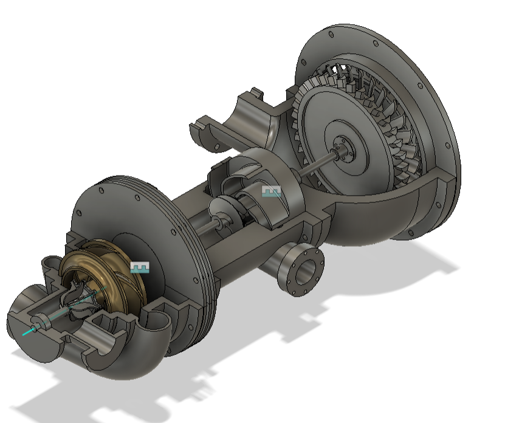
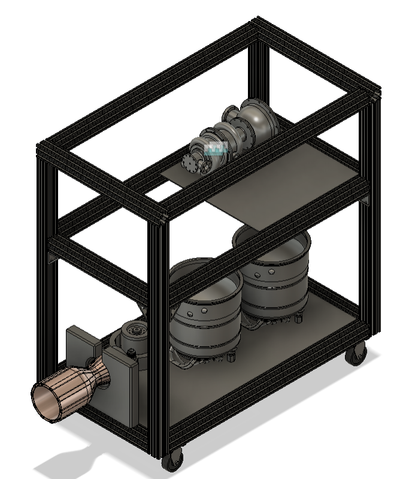
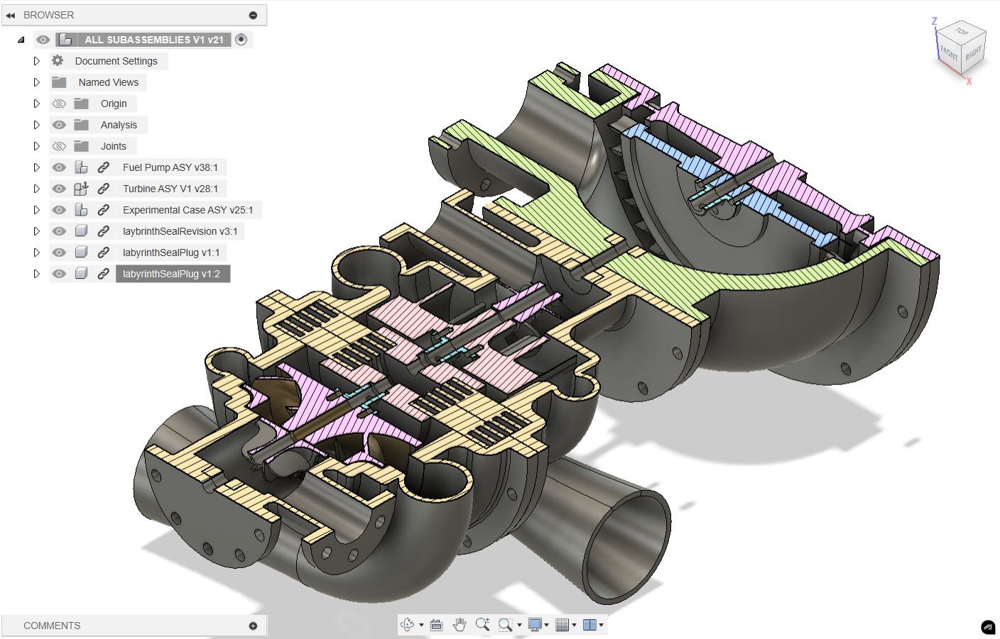
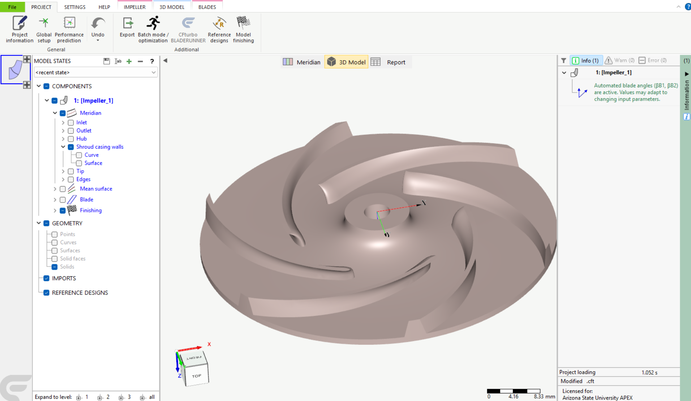
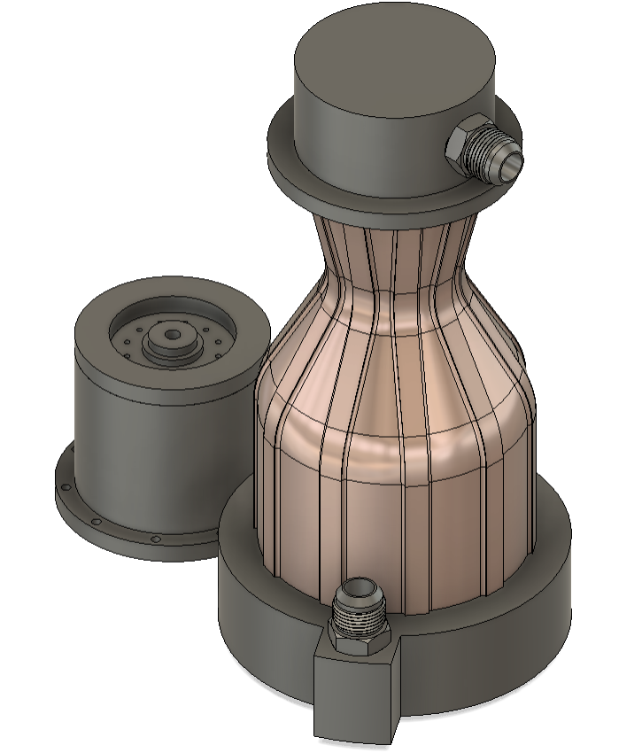

Projects
Turbopump Design Work
Portfolio
Turbopump Design Work
As a founding member of the Aerospace Propulsion Exploration (APEX) club at ASU, I've helped lead the design of a turbopump-fed LOX/kerosene rocket engine. Inspired by the work that competing clubs like Sun Devil Rocketry and SEDS do, we were inspired to fill a gap where we saw other universities breaking into: turbomachinery. While the club is in its infancy, I personally designed all initial pump components (subject to change, most likely).


Project Overview and My Role
As mentioned previously, I spearheaded the mechanical design of the turbopump, from the impeller, inducer, housing, to knife-edge seals, backplates, and more. This was all developed using software like Fusion 360 for planned future collaborative design work. I also made use of CFturbo, a software package that can produce fluid-optimized geometries for impellers and inducers, among other things. I also designed the fundamental test stand structure and even parts of the combustion chamber assembly, so as to serve as something students could build and improve upon as we gained more members.

Turbopump Component Design
- Impeller and Inducer: While I initially investigated how to design these in Fusion 360, it proved to be painfully annoying. Eventually, I came to be more reliant CFTurbo. Making use of its global parameter-driven (e.g. expected head, operating pressure, etc) functions made it a breeze to iterate on the designs of the impeller and inducer respectively. While it was a little painful exporting back into Fusion 360, some work arounds were indeed found and life went on as usual.
- Housing and Backplates: I engineered a robust housing and backplates in Fusion 360 to withstand high pressures, integrating knife-edge seals for leak prevention and structural stability.
- Rotating Group: Using Dyrobes, I analyzed rotor dynamics for bearings and snap rings, ensuring vibration-free operation at high RPMs (e.g., 20,000 RPM).
- Fasteners and Seals: I incorporated bolts and redundant sealing mechanisms to enhance reliability under extreme cold and pressure.


Design and Analysis Process
I defined requirements (e.g., pressure rise, flow rate, material strength) based on LOX/kerosene engine needs. Using CFturbo, I optimized fluid paths, followed by Fusion 360 modeling for component integration. Dyrobes ensured rotor stability, while Ansys simulations (ongoing) validate structural loads.
Manufacturing and Procurement
I planned procurement for aerospace-grade materials (e.g., titanium alloys from ATI Metals, 8–12 week lead) and components like bearings from SKF. Manufacturing leverages ASU’s CNC milling and 3D printing capabilities, with a 12 to 20 week timeline for fabrication and QA, adhering to ITAR and FAA regulations.
Verification and Testing
I developed a verification plan, including tolerance analysis (CMM inspections), rotor dynamics testing (Dyrobes), and Ansys FEA for stress under cryogenic conditions. The test stand design supports high-pressure LOX/kerosene testing, targeting industry-relevant performance metrics.

Summary
- Designed a turbopump-fed LOX/kerosene engine, advancing ASU’s propulsion capabilities.
- Mastered Fusion 360, CFturbo, Dyrobes, and Ansys for aerospace design.
- Built a test stand for safe, repeatable engine testing.
- Led APEX’s technical efforts, overcoming early team challenges.